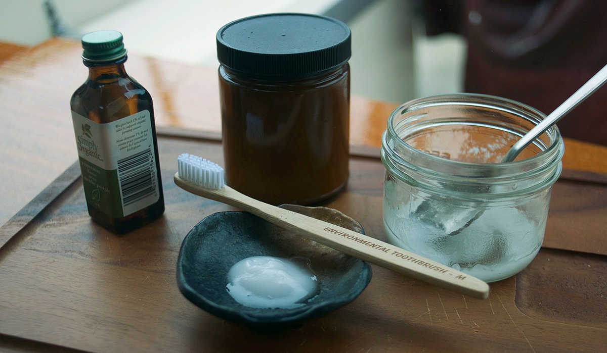

basic toothpaste
1 jar — 5 minutes
I've always liked making things from scratch, especially when cooking. I enjoy the process. Making it myself means that I control the quality and quantity of each ingredient. In the last couple of years, I've removed most pre-made cleaning and hygiene products from my life. I make my own shampoo, deodorant, toilet cleaner, kitchen cleaner, and I also make my own toothpaste.
Chances are you already have all of the ingredients at home to make it. The recipe consists of baking soda, coconut oil and peppermint oil (also food grade).
You can also brush your teeth with a simple baking soda and water paste. Baking soda is abrasive enough to remove accumulations on teeth and rinses completely clear with only a very slightly salty taste. For those who dislike brushing with a salty taste, adding coconut and peppermint oil helps to smooth down both the taste and texture.
NOTE: In colder climates your toothpaste will solidify and scraping some onto your toothbrush can be a challenge. Put the jar near a heater for 5 minutes or so to help soften it down.
Toothpaste is only as good as your brushing (which should last for a min of 2min). It is more important to brush your teeth thoroughly than to use toothpaste, especially after eating sweets.
 baking soda 22 g
baking soda 22 g coconut oil 45 ml
coconut oil 45 ml peppermint oil 2.5 ml
peppermint oil 2.5 ml
toothpaste
- Mix 22 g (1 1/2 tbsp) of baking soda with 45 ml of coconut oil. If the coconut oil is hard, melt it down and mix it with the dry ingredients
- Add 2.5 ml (1/2 tsp) of food grade peppermint oil.
- Mix everything up and brush your teeth!